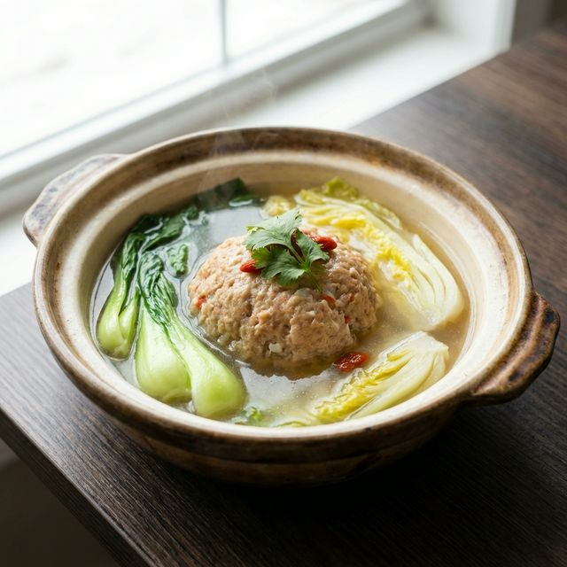

食材准备
- 主料： 猪肉 (肥四瘦六) 500g, 鲜蟹粉 50g
- 配料： 荸荠 50g, 青菜心 适量
- 调料： 葱姜水、绍酒 适量
- 调料： 盐、清汤 适量
- 调料： 淀粉 少许
烹饪步骤
细切粗斩
猪肉切成石榴珠大小的粒，不要用绞肉机。荸荠切碎。将肉粒、荸荠、蟹粉混合。狮子头的核心在于肉不是剁碎的，而是切碎的，这样才有口感。
搅拌定型
加入盐、绍酒、葱姜水，用手轻轻打圈搅拌。不要过度搅拌以免肉质过紧。根据肉的干稀程度加入少许淀粉。
做成肉丸
双手蘸少许葱姜水，取肉泥揉成拳头大小的球形（狮子头由此得名）。
清炖
砂锅内放入清汤垫上菜心，将肉丸轻轻滑入。水开后转极小火，保持汤面微沸状态。这是“炖”的关键，火大肉容易散，汤容易浑。
出锅享用
炖煮约2-3小时。成熟后的狮子头色泽洁白，浸在清汤中，上面点缀金黄蟹粉。汤底鲜美，肉块入口即化，肥而不腻。